Safari
Safari 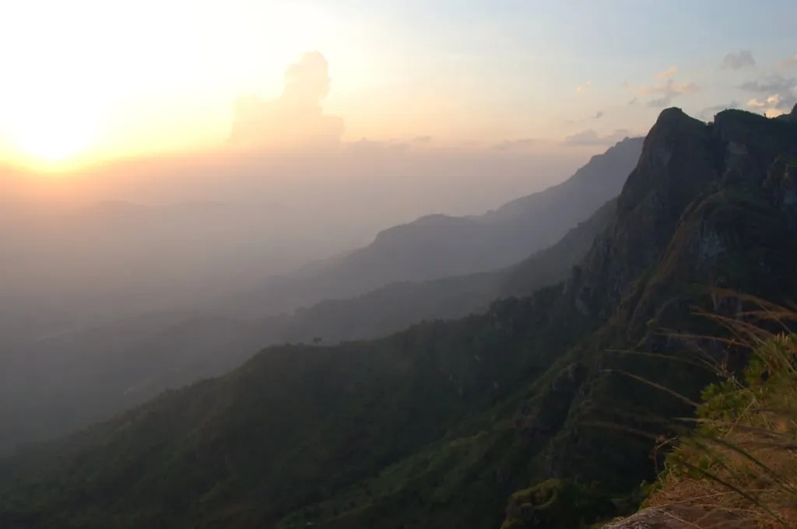
The Amani Forest in Tanzania ranks among the top 12 places on Earth for biodiversity. Since the late 19th century, it has attracted scientists and nature enthusiasts from around the world. This forest is the most thoroughly researched in the ancient Eastern Arc Mountains, which formed 100 million years ago. But what makes it so special?
In this article, we'll explore:
- The location and significance of Amani Forest;
- Why naturalists and birders flock to this place;
- The renowned scientist Robert Koch's activities there;
- Why Amani didn't become the world's largest botanical garden;
- The traditional crops grown in the Usambara Mountains;
- The origins of the beautiful African violet;
- What one can experience visiting Amani today.
Usambara Mountains: location and facts
Located in northeastern Tanzania, about 30 kilometers (18.6 miles) from the Indian Ocean coast, lies the mountain range known as the Usambara. Stretching 90 kilometers (56 miles) inland, these mountains are celebrated worldwide among nature enthusiasts. The Usambara Mountains hold particular appeal for plant aficionados, butterfly and chameleon enthusiasts, as well as birders.
This is largely due to the rich array of unique plants and numerous endemic animals found in its forests, including birds. Endemic means these species are found only here and nowhere else on the planet. The variety of plant species is so extensive that this area is part of a global list of the richest places in terms of biodiversity (with only 34 such places worldwide).
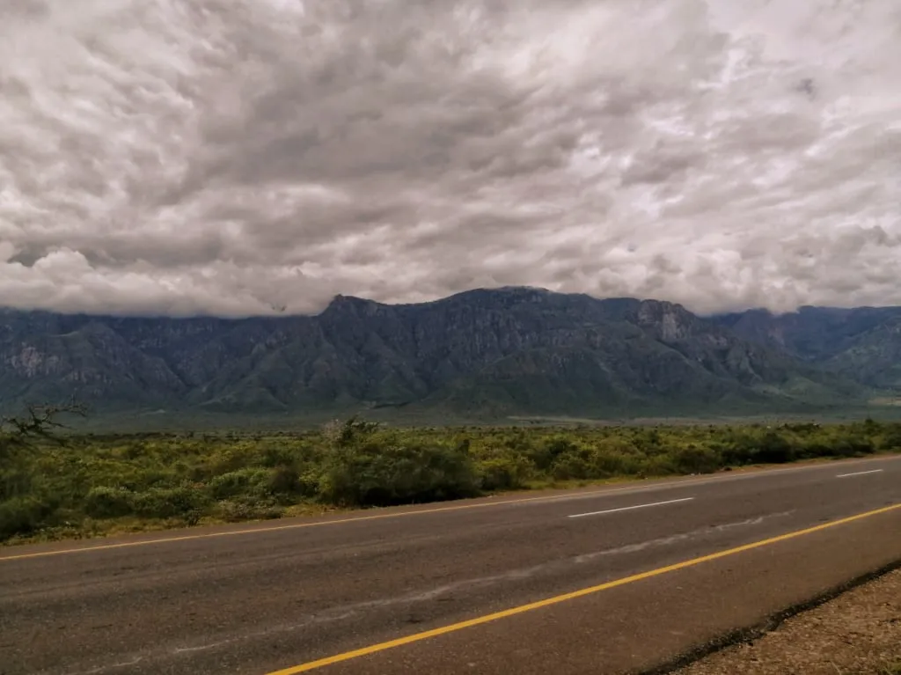
For instance, excluding mosses, around 3,450 plants are documented here, with approximately 900 being endemic or near-endemic. The animal life includes endemic spiders, beetles, butterflies, and other insects. Among the fauna of the Usambara Mountains are endemic millipedes, mollusks, frogs, chameleons, lizards, and snakes.
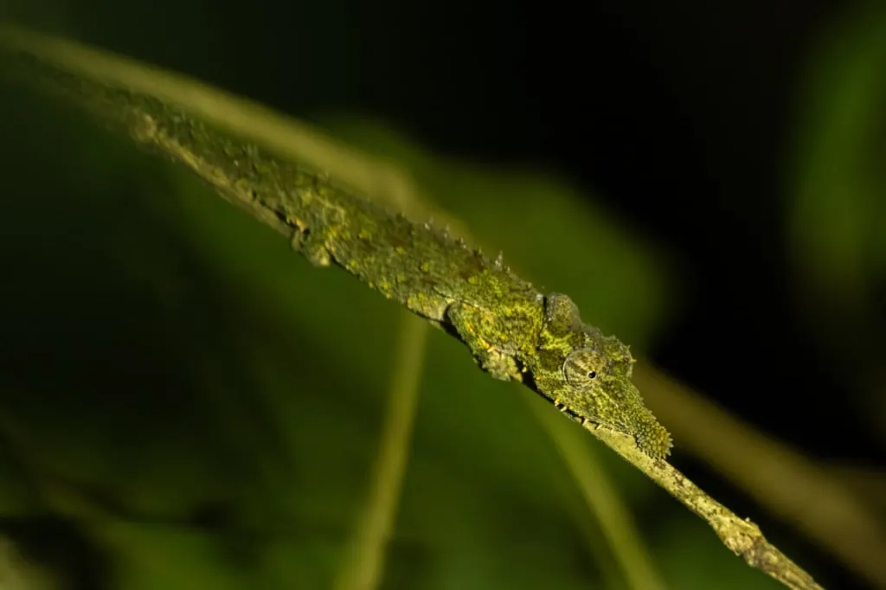
About 3% of plants in the Eastern Usambara Mountains alone (Usambara is typically divided into Eastern and Western) are strict endemics, with another 22% being near-endemics. Moreover, 85% of the millipedes, 45% of the mollusks, and 40% of the butterflies found here are endemic.
The most famous endemic bird species discovered in the Usambara Mountains include the Long-billed Forest Warbler, Amani Sunbird, Banded Green Sunbird, Usambara Eagle-owl, Usambara Akalat, Dapple-throat, Usambara Weaver, Usambara Thrush, Usambara Greenbul, among others. Some are exclusively endemic to this region, while others are represented by subspecies found only here. Many birds were first discovered and described in the Usambara forests. Learn more about the birdlife of these mountains in our detailed feature on birdwatching in the Usambara and Pare Mountains.
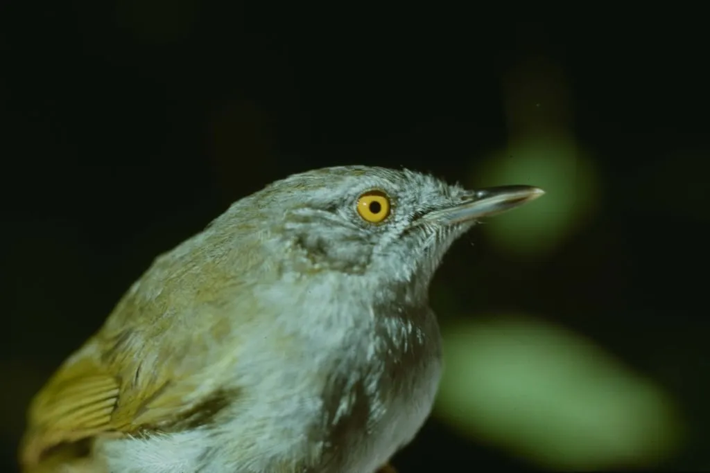
Among the mammals that can be considered semi-endemics of the Usambara Mountains are the Eastern tree hyrax, Swynnerton's bush squirrel, Lesser hamster-rat, Sokoke dog mongoose, and Abbott's duiker. Many of these animals can be spotted in the Amani Forest and some other fragmented forests of the Usambara Mountains, as well as historically connected mountain ranges like the Uluguru and Udzungwa.
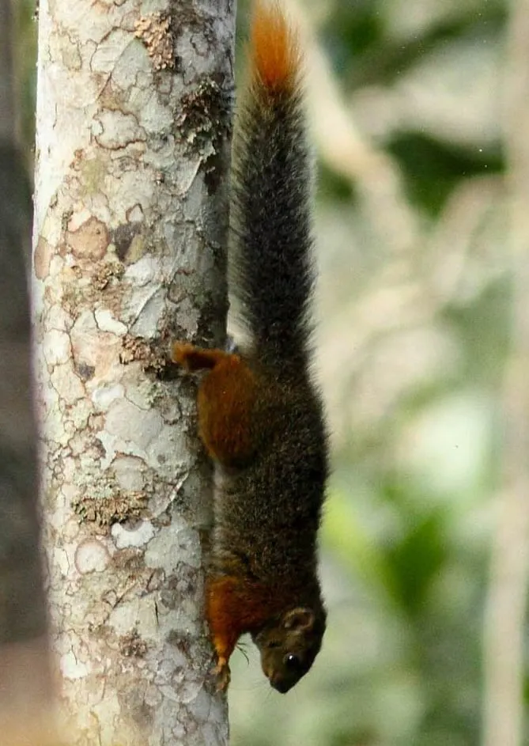
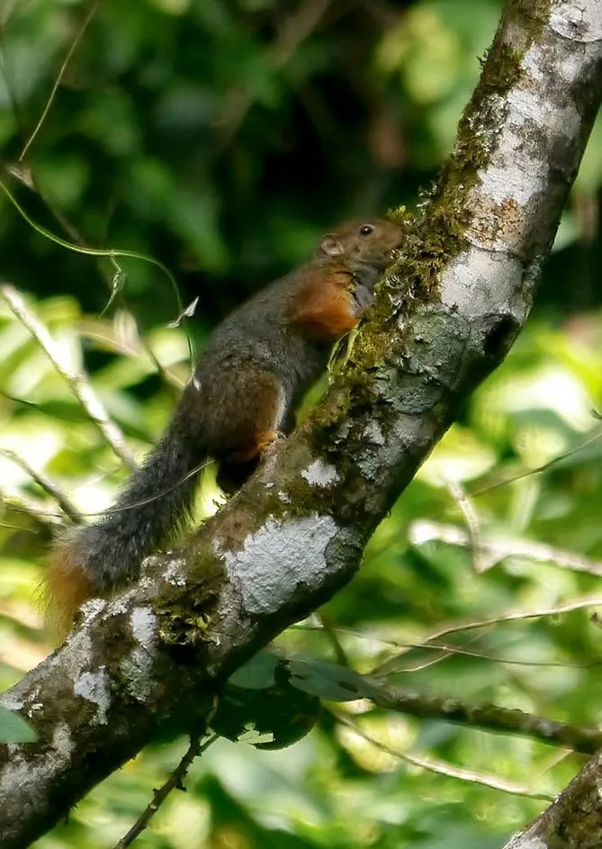
What makes the Usambara Mountains special
The tropical forest that covers the current Usambara Mountains formed around 30 million years ago. At that time, it spanned the territory of modern-day East Africa, occupying not just the mountains but the entire region. However, around 10 million years ago, the climate began to change significantly, with the air becoming drier and cooler, leading to the drying of the ecosystem and the gradual transformation of forests into savannas.
Thus, the forests remained as isolated patches only on elevated areas where significant precipitation still occurred. This isolation resulted in high biodiversity and endemism, which on one hand, is unique to the populations of different mountains, and on the other, is common to the entire The Eastern Arc Mountains is an ancient mountain system along the East African Rift. Geologically, it includes the Taita hills of Kenya, as well as the Tanzanian mountains of Pare, Usambara, Nguu, Nguru, Uluguru, Ukaguru, Rubeho, Malundwe, Udzungwa, and Mahenge. All of them are covered with remnants of ancient rainforests, and all exhibit a high level of endemism. Often, a particular animal species can be found inhabiting most of these mountains.
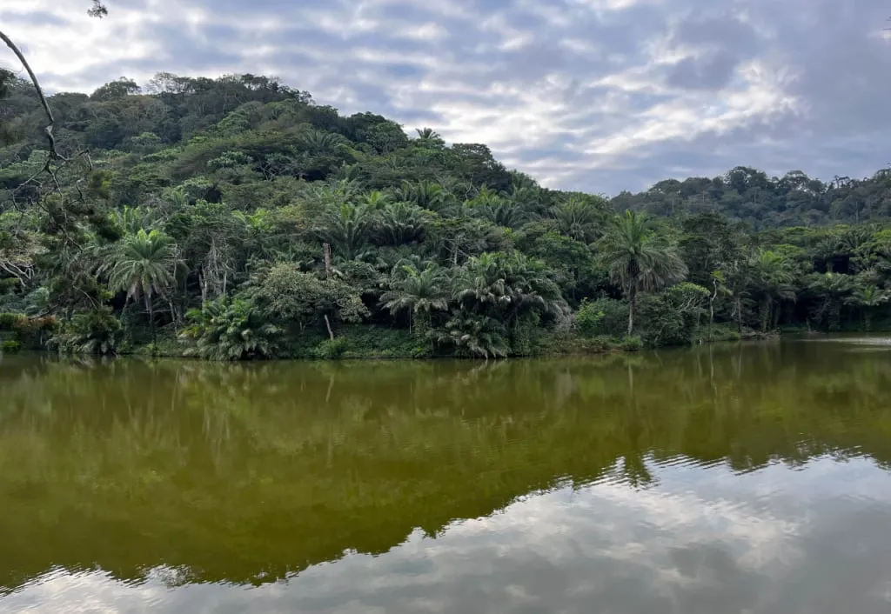
In ancient times, when the current continents were united into the supercontinent The ancient supercontinent Gondwana formed around 600 million years ago as a result of the merging of several separate fragments of the previously unified supercontinent Rodinia. About 180 million years ago, Gondwana began to break apart into what are now South America, Africa, Antarctica, Australia, Zealandia, Arabia, Madagascar, and the Indian subcontinent. This process concluded roughly 20 million years ago with the separation of Antarctica from Australia. Evidence of their once unified landscape can still be seen today, particularly in the shared biological and zoological elements across these regions. vast rainforests maintained a remarkably stable climate for millions of years. These forests easily survived the coldest and driest times of the ice ages. Warm, moist air from the Indian Ocean penetrated this area, and winds consistently brought large amounts of precipitation. Even today, the forests of the Eastern Arc Mountains are much more humid than the surrounding lowlands. For instance, on the eastern slopes of the Uluguru Mountains, up to 3000 millimeters (118 inches) of rain falls annually. Alongside the eastern slopes of Rungwe, they are considered the wettest places in Tanzania.
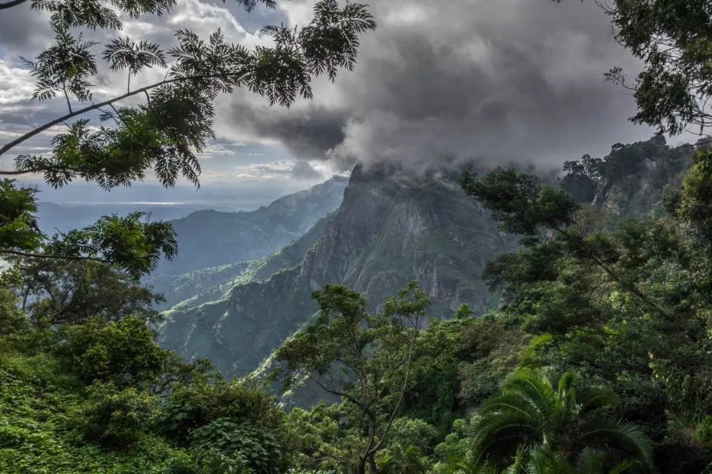
One of the fragments of the Eastern Arc Mountains is the Usambara Mountains. Their proximity to the ocean and the equator, elevation, and abundant rainfall have influenced the vegetation, which developed in relative isolation at high altitudes. Typically, prolonged natural seclusion from a larger ecosystem results in unique organisms. This phenomenon often occurs on remote islands and in areas bounded by natural barriers such as seas, large lakes, and mountain systems.
In the Usambara Mountains, a similar occurrence took place. Biologists compare its endemism to the Galápagos Islands, which the young naturalist Charles Darwin explored in the 19th century, prompting his idea of the evolutionary origin of species. Some modern researchers refer to the Eastern Arc Mountains as the "Galápagos of Africa"
The most famous forest reserve in the Usambara Mountains is Amani. Its unique biodiversity and intriguing history have earned it this reputation.
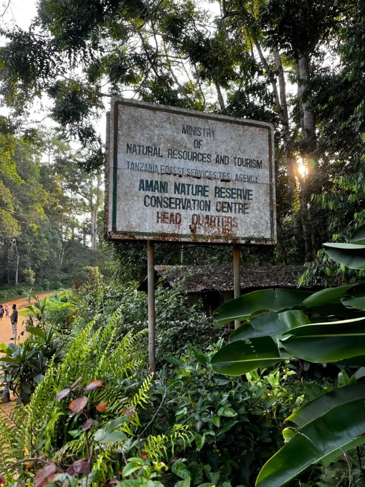
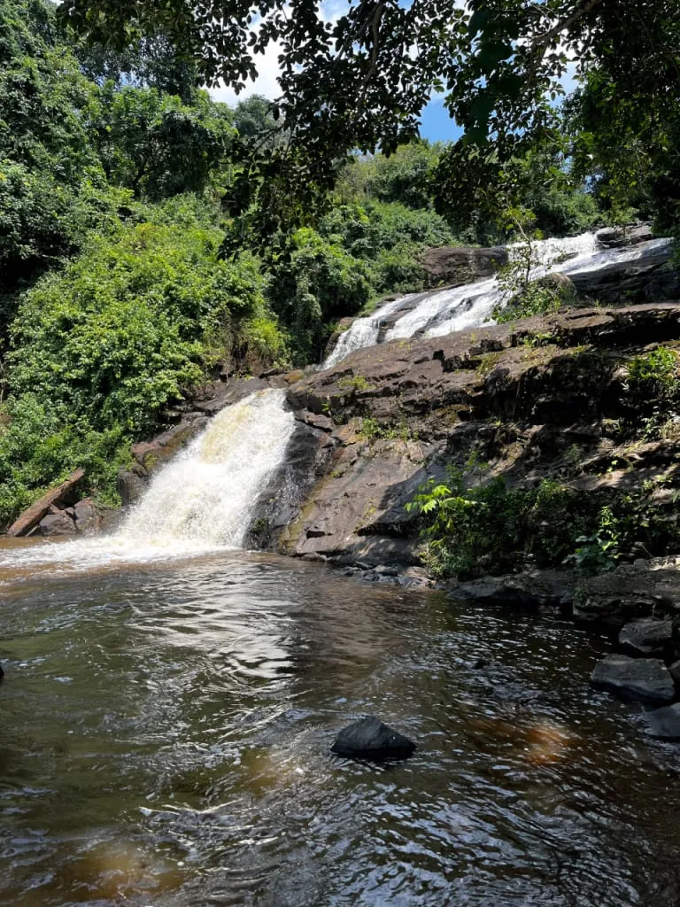
History of Amani
When discussing the Usambara Mountains, the Amani Nature Reserve is almost always mentioned separately. It's considered a model forest in terms of biodiversity. It houses one of the largest botanical gardens in Africa and is most frequently visited by tourists eager to see its local flora and fauna. But why Amani in particular?
This forest reserve is the most extensively studied. Research on the forest began over a hundred years ago.
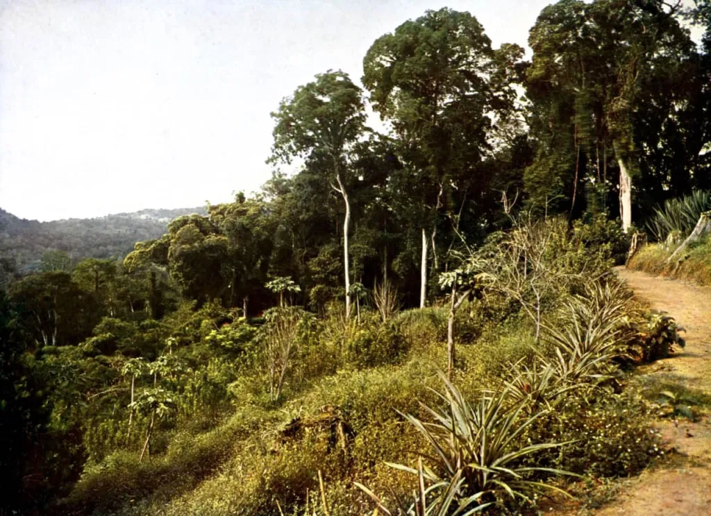
Influence of Germany
In the 1880s, the German Empire began to exert more influence over these territories. At first, German representatives signed protectorate treaties with several local chiefs on the coastal territory of Tanganyika, the mainland part of present-day Tanzania. Later, using military advantage, Germany forced the island sultanate of Zanzibar to relinquish claims to these lands.
Eventually, an agreement with Great Britain was reached regarding the division of influence over vast territories in East Africa. As a result, all of Tanganyika, along with Burundi and Rwanda, as well as a part of Mozambique, were called German East Africa. Some coastal settlements saw uprisings led by Arab traders. The Germans subdued the resistance using force - coastal towns of Bagamoyo, Dar es Salaam, and Kilwa were flooded with German marines.
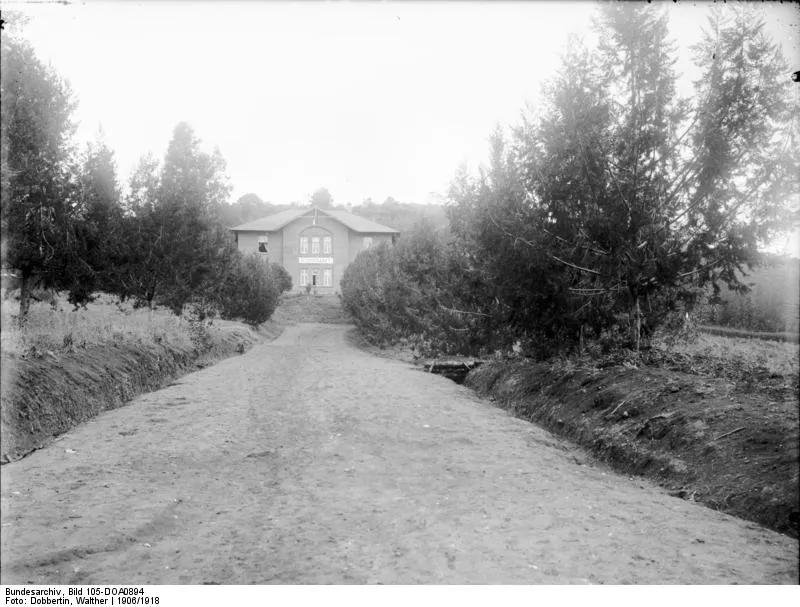
The military objectives of Germany would significantly influence the study of the Usambara Mountains and, in particular, the Amani forest.
In the 1890s, new uprisings flared up deep inside Tanganyika — in the Iringa region. Led by chief Mkwawa, the rebels defeated a German battalion and killed the German commissioner. To suppress the rebels, Germany had to increase its military presence in the African colony. In the 1900s, near the port city of Kilwa, the Maji-Maji rebellion occurred, necessitating even more troops.
Forcefully subduing the local population facilitated the initiation of large-scale agricultural projects in Tanganyika's fertile lands. Hundreds of enterprising Germans flocked to the region to farm. Within a few years, a plantation system was established. The agricultural sector was structured so that locals were compelled to work on farms and plantations to pay mandatory taxes.
The Germans actively started growing rubber trees and cotton. Approximately two million coffee trees were planted. However, the primary crop grown in the Usambara region was sisal, used for rope, brushes, sponges, nets, and so forth. Even today, traveling alongside the long chain of the Usambara Mountains, one can see endless sisal fields.
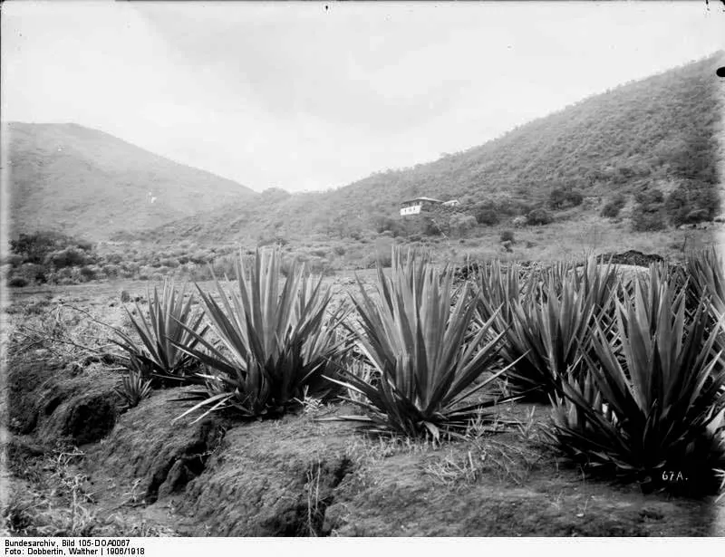
The idea of cultivating sisal on an industrial scale belonged to the German agronomist Richard Hindorf, who came to German East Africa to study tropical crops. He introduced this plant from the American state of Florida and set up the first sisal plantations in the Tanga region, where the Usambara Mountains are located. The project was so successful that it made Tanganyika one of the world's leading sisal exporters. This enterprise enriched the country, exerting a profound influence on its economy, even extending into the post-colonial period.
Richard Hindorf proposed establishing an experimental agricultural station where local crops growing in the Usambara could be studied. The Kwai experimental station quickly became the most advanced in the German colony, attracting not only agronomists but also zoologists. Notably, the renowned microbiologist Robert Koch worked here with the goal of controlling malaria, which was rampant among the military. By that time, it was known that quinine bark could help fight the disease, and that became the epidemiologist's focal point. He would later return to study sleeping sickness and so-called blackwater fever. It was here that he established his first tsetse fly farm to study the dangerous parasites they carry.
Building on the Kwai station's foundation and recognizing the vast potential of East Africa's flora, the Amani Research Institute was founded in 1903. Although it was botanical, the institute paid attention not only to flora but also to the fauna of the Usambara ecosystem. The enterprising Richard Hindorf, apart from commercially cultivating coffee, sisal, eucalyptus, cinchona, and camphor trees, conducted extensive research on the flora and fauna of the Amani forest and laid the groundwork for its subsequent scientific studies. He was the first to understand that this region boasts an extraordinary biodiversity.
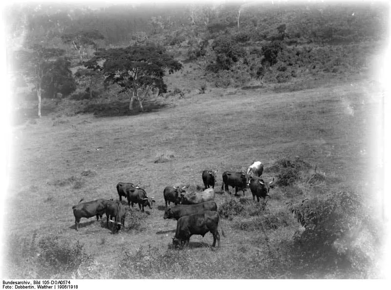
His notes and initial findings ensured the institute received funding and attention from other scholars. German botanist Albrecht Zimmermann visited and later led the institute. His surname can now be found in many scientific names of plants growing in Tanzania. In the Amani forest, the scientists established a botanical garden, planting hundreds of tropical plant species, including those brought from other countries. To this day, the Usambara Botanical Garden remains one of the largest in all of Africa.
The Amani Institute, together with its botanical garden, quickly became the continent's most modern facility, rivaling the Bogor Botanical Garden in Indonesia and the Pusa Institute in India. There were plans to transform the botanical garden into the world's largest arboretum. The institute boasted state-of-the-art laboratory equipment for its time. Under Albrecht Zimmermann's leadership, the institute quickly achieved international recognition. Here, fertilizer research was conducted, toxic and medicinal plants were studied, as well as pest control methods and other areas.
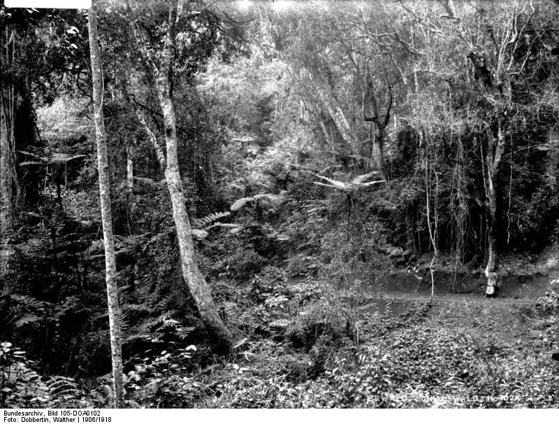
Local flora research was simultaneously conducted. The renowned German botanist Adolf Engler, an expert in plant classification of his time, worked here. His ambitious goal was to systematically catalog all Earth's plants, from mosses to flowering species. The work he began continues to this day. He also established a herbarium where plant samples were collected for identification. Numerous botanists contributed to its vast collection. Part of the herbarium remains preserved today in the neighboring town of Lushoto.
During the German colonial period, Lushoto was named Wilhelmstal. Military and administrative officials of the German colony greatly appreciated the climate of the Usambara Mountains, especially since, at such altitudes, malaria-carrying vectors were non-existent. Wilhelmstal became the main summer resort for officers stationed in coastal towns and was also considered the capital of the Tanga region. The cool Usambara climate made this high-altitude resort a popular vacation spot.
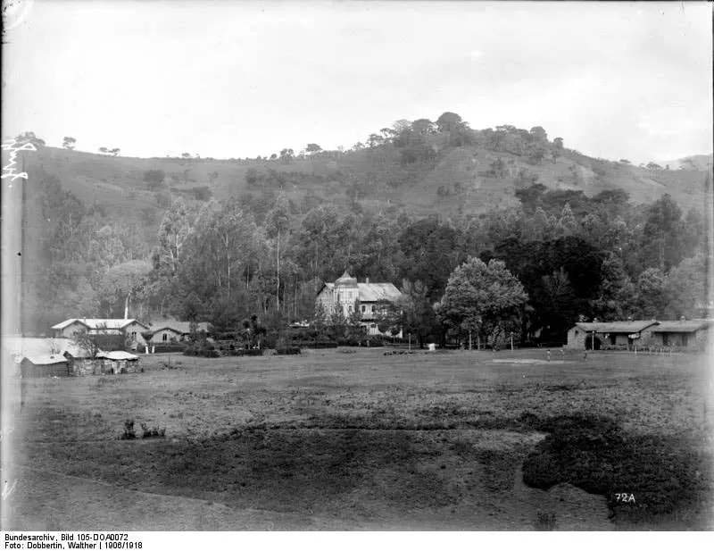
At that time, the commander of the Usambara district in German East Africa was Baron Walter von Saint Paul. He had a passion for botany, largely influenced by his father, who was also an avid tree lover and botanist. During a stroll in the mountains, the baron discovered a beautiful flower resembling a violet. Seeds sent to Europe led to the identification of this new plant species, named in honor of its discoverer. Today, we recognize this genus of brightly flowering plants as Saintpaulia, commonly known as African or Usambara violets. Seven species of this genus are endemic to Usambara.
Often romanticized, the Usambara violet is described as having started its triumphant journey across European windowsills from potted plants in Hamburg and Berlin. To this day, Usambara violets remain popular as houseplants well beyond Europe, symbolizing the signature plant of the Usambara Mountains.
Concurrently, the Germans were constructing the Usambara Railway, which ultimately connected the coastal town of Tanga to the town of Moshi, located at the foot of Kilimanjaro deep inside Tanganyika. This railway connection allowed the Kilimanjaro region to receive agricultural products from Usambara and facilitated the transport of coffee trees to the Kilimanjaro foothills, where coffee was also successfully cultivated. Today, Kilimanjaro coffee is recognized worldwide as a quality product.
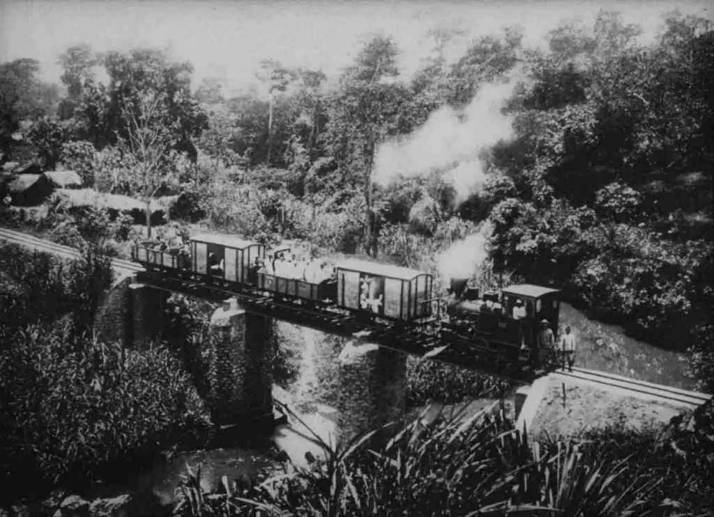
The Amani Institute also boasted an extensive library housing thousands of books and hundreds of journals. Today, the library building remains in its original location and, along with other colonial buildings, can be considered an architectural gem of the local village. Sadly, the majority of the books and other materials have not survived. They were transported to Berlin after World War I, but a bomb struck the Berlin herbarium during World War II, destroying the materials.
During World War I, the role of the institute became increasingly important as it produced medicines and various chemical products for the needs of the German military contingent and German settlers engaged in farming in German East Africa. By that time, in addition to the already mentioned crops, Usambara was the place where many other plants were cultivated: tea, various medicinal plants, spices, pine as a building material, cinchona trees for quinine production, and much more.
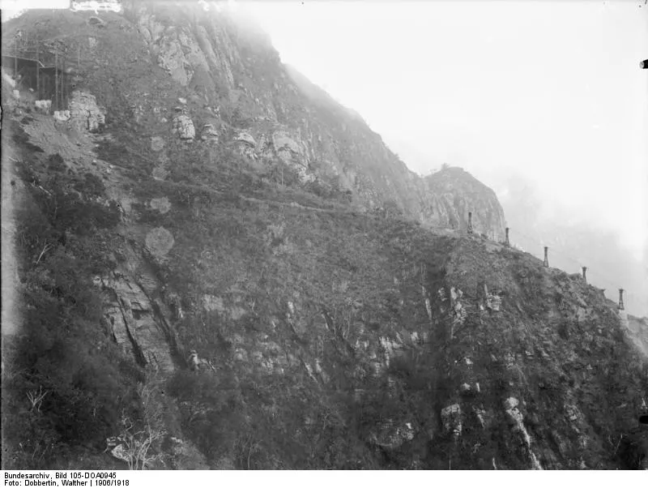
Soon after the end of the war, the Germans had to abandon the Usambara Mountains and all the institutions they had established there, including the Amani Institute. There would never again be such significant research activities as in the early 20th century. The herbarium declined, the botanical garden wasn't renewed, and a large portion of the research materials were either exported or remained unused. Plans to create the world's largest arboretum in the Usambara Mountains remained just that – plans.
Under British control
In 1919, following the outcomes of World War I, the territory of Tanganyika came under British control, ushering in a new era. The British colonial government, through appointed governors, consistently pursued a policy of local governance. Local chiefs and Tanganyikan politicians increasingly influenced governmental decisions. Among them, in the 1950s, was Julius Nyerere, who would later become the president of Tanganyika and Tanzania after gaining independence.
The British government of Tanganyika continued to fund the Amani Institute and support its research activities. Known works included research on beetles that are pests on coffee plantations. Plants from the Passiflora genus were actively studied, which could help with viral diseases that were still a problem in East Africa. Research was conducted on the wax produced by local plants. The study of the properties of various species of agave continued to obtain higher-quality fiber from it.
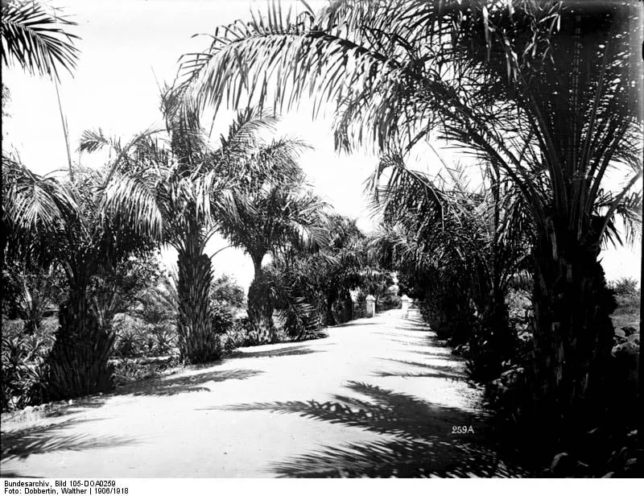
In the 1920s and 1930s, British botanists updated the lists of plants growing in Amani, as the data had been lost after the departure of the German scientists. This inventory process spanned five years. Verification was conducted against extensive references from the Royal Botanic Gardens, Kew, and the Imperial Forestry Institute in Oxford. Botanist Percy James Greenway led the work. By 1948, the Amani Botanical Garden's herbarium had accumulated more than 60,000 specimens. The collection was later transferred to Nairobi in neighboring Kenya.
In 1949, the institute was reformatted to focus exclusively on malaria research. Later, it evolved into a medical center researching transmissible diseases in general.
Amani today
In 1961, Tanganyika peacefully gained independence from Great Britain. In 1964, after uniting with the island of Zanzibar, it transformed into the Republic of Tanzania, becoming a fully independent state. The Amani Institute continues to operate as an agricultural and partly biological entity, but exclusively at the national level. Due to a lack of funding, international research projects haven't been pursued for a long time. The institute's mission includes developing modern agricultural methods and supporting local farmers.
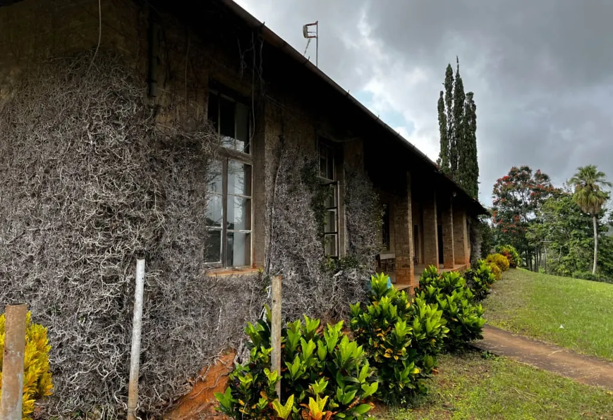
Furthermore, a branch of the National Institute for Medical Research is situated within the premises of the botanical garden. Parts of the garden have become overgrown, with many introduced species being replaced by local ones. A portion of the herbarium remains in Lushoto, while the library's legacy has mostly been transferred to the University of Dar es Salaam.
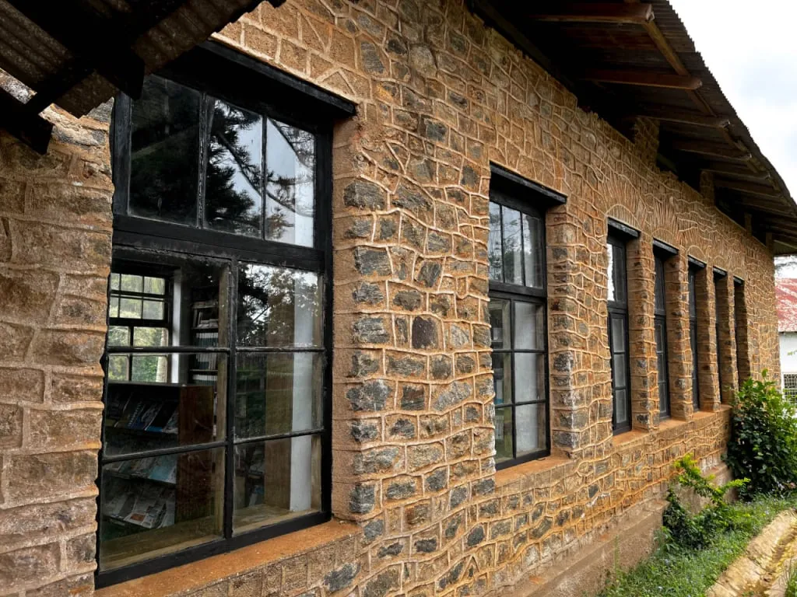
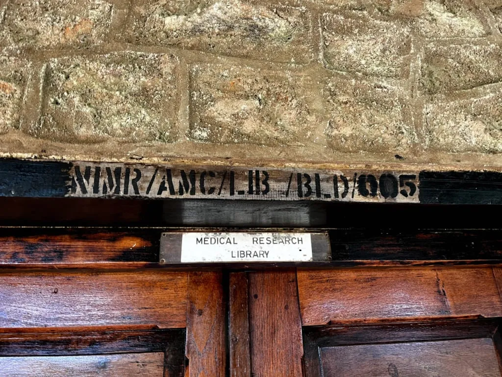
Quinine tree plantations were destroyed in the 1960s. Large areas are now occupied by tea plantations.
In 1997, part of the Amani forest became a forest reserve, meaning it's a protected area. This happened a century after people realized that the forests of the Usambara mountains are unique and extremely biologically interesting. Sadly, at least 70% of the original forest cover of the Usambara mountains has been lost due to active agriculture in the region and the activities of the local inhabitants.
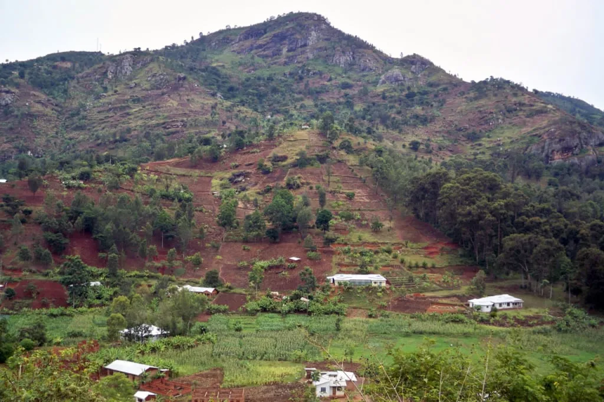
Population density in this Tanzanian region is growing at an exceptionally high rate, villages are expanding while remaining economically disadvantaged. Residents are forced to use these forests as the sole resource: trees are actively cut down for construction purposes and firewood, medicinal plants are harvested, most of the inhabitants practice subsistence farming, expanding their lands at the expense of the forest. Honey, fruits, and plants are collected in the forest; wild animals are hunted for their meat, and birds and reptiles are captured for further sale on the international markets.
The forests of the Usambara mountains began to be damaged during the expansion of German plantations. Later, under British colonial management and with the help of Finnish specialists, active logging took place in this region. From the 1950s, deforestation became more extensive. Only in the 1990s, when companies realized the magnitude of the damage caused, operations were reduced, and Finland began to fund projects to conserve the Usambara forests. However, the local ecosystem has degraded so much that it now presents a huge challenge.
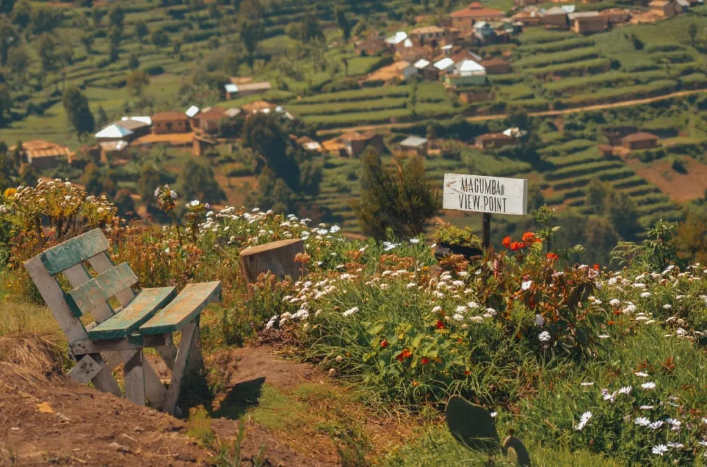
Fortunately, several projects are underway in Usambara today, aimed at conserving forests and helping the local animal populations survive. Besides Amani, there are other forest reserves in the Usambara mountains, but they are highly fragmented and isolated from each other. This is a problem for animals whose habitat is limited to a small part of a particular forest. The Tanzania Forest Conservation Group creates forest corridors between individual forests so that animals can move between them. Local residents are actively involved in tree planting.
We also participate in a project to conserve the population of endemic birds. It involves collaboration with the organization Nature Tanzania, which is working to restore the population of Long-billed Tailorbird, of which less than 250 remain in Amani. At Angelino Adventures, we allocate funds for monitoring the habitat of the Long-billed Tailorbird, supporting volunteer efforts, and for the education of students involved in the project. Learn more about this unusual approach to preserving this endangered endemic bird species in our article about our role in conserving Tanzania's natural heritage.
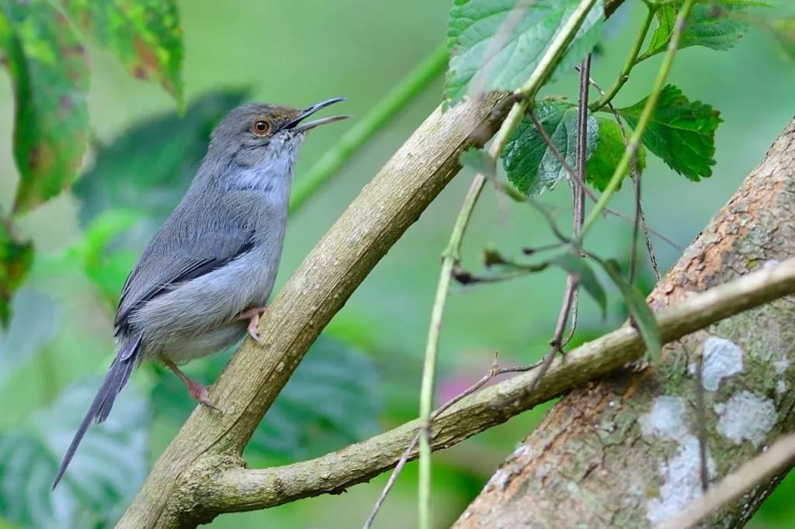
In 2000, UNESCO designated Amani, along with other protected areas of the Eastern Usambara, as a biosphere reserve. This enabled the launch of new projects for forest restoration and sustainable community development. Ecotourism is also becoming increasingly popular in the area.
The current area of the Amani Reserve is nearly 84 square kilometers (32.4 square miles), which includes a botanical garden territory of about 3 square kilometers (1.16 square miles) and almost 11 square kilometers (4.25 square miles) of tea plantations. Visitors come here for forest tours, to observe butterflies and chameleons. Amani is popular among birders. There are also natural and historical attractions.
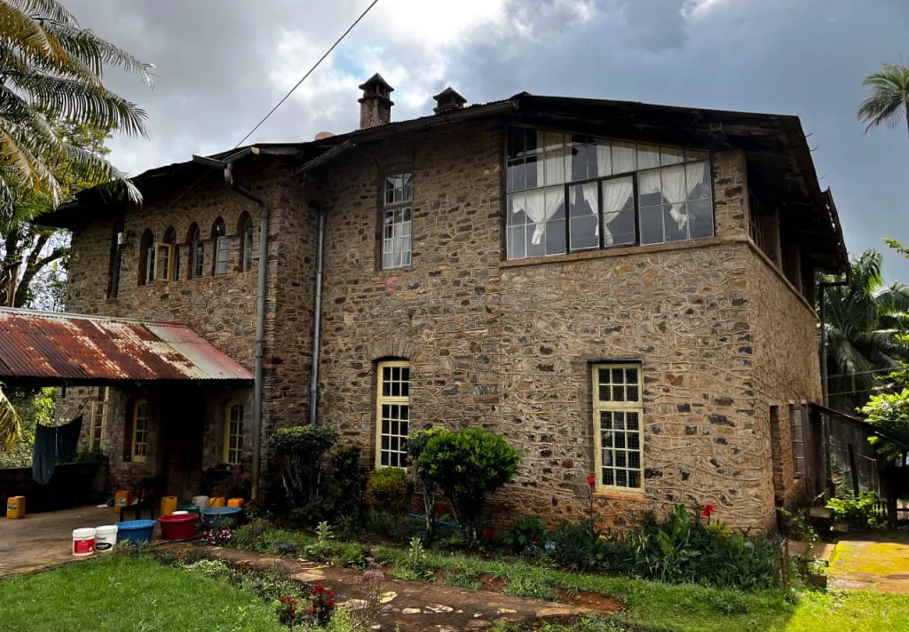
What to see in Amani
When visiting the most renowned reserve of the Usambara Mountains, one should start with what is the pride of the biologists who worked in Amani — the botanical garden. Today, it houses over 1000 plant species collected from various corners of the world. The garden is a practical training site for students from relevant Tanzanian educational institutions, and scientists often come here on excursions.
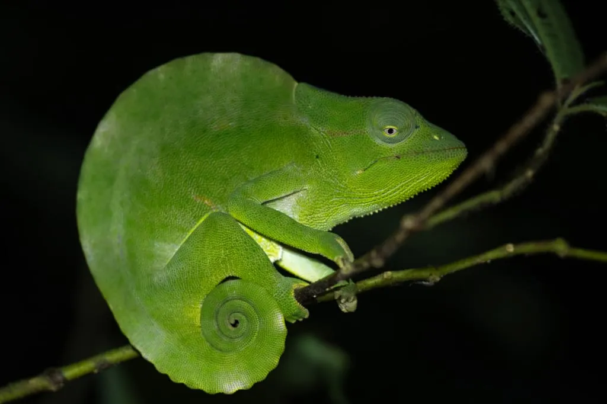
It's worth taking a walk through the forest to spot local reptiles and amphibians, a quarter of which can only be found here and nowhere else in the world. Forest excursions for observing chameleons, lizards, frogs, and snakes are conducted at night. On-site, guides quickly locate these animals in the underbrush.
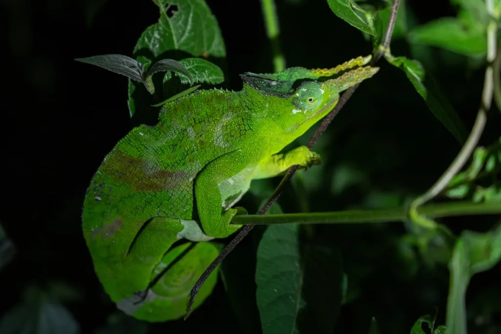
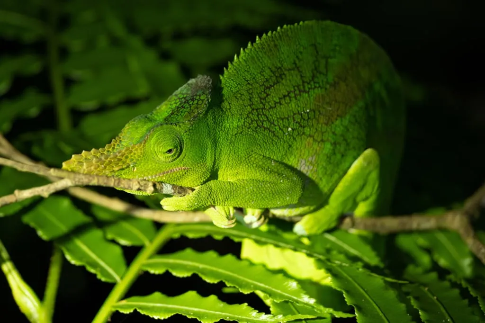
Seeing the African violet (Saintpaulia) in its original habitat is priceless. Look for it near rivers and waterfalls, where mists frequently arise or water mist forms. Sadly, some species of the Usambara violet and most chameleons are classified as Endangered or are under threat of habitat loss. This is due to deforestation and other human activities.
Birding is another popular activity within the Amani forest and its surroundings. For the forest reserve as a hotspot on ebird.org, around 350 bird species are registered.
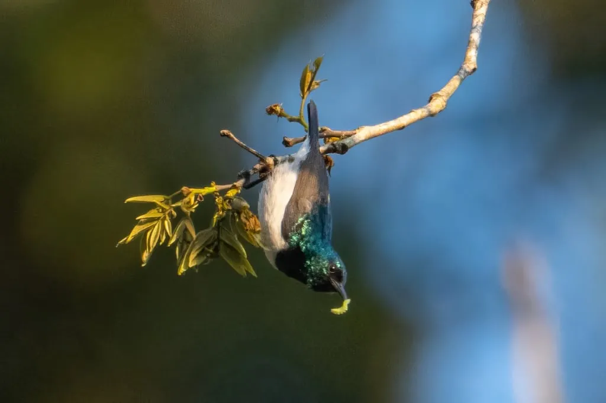
You won't see large animals here. Elephants and leopards once roamed the Usambara forests, but due to human settlement and their active actions in this region, such animals are long gone. In the forest, you might encounter duiker antelopes, galagos, honey badgers, bush pigs, squirrels, and black-and-white colobus monkeys. Considering that the forest antelopes are quite elusive, one shouldn't expect an exciting walking safari in Amani. However, it's interesting to see the colobus with their luxurious tails, which they hang when sitting high in the trees. Large birds, such as hornbills and predatory vultures and eagles, can also be spotted here.
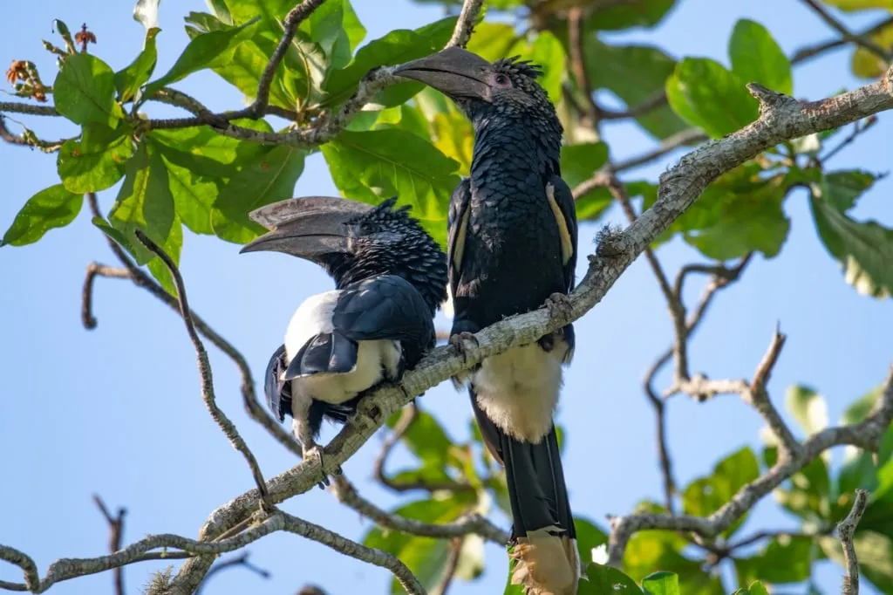
It's fascinating to see old German buildings right in the village that house a library, medical center, laboratories, and residences. Stone houses from the colonial era are well-preserved, allowing for cultural tours of the German settlements.
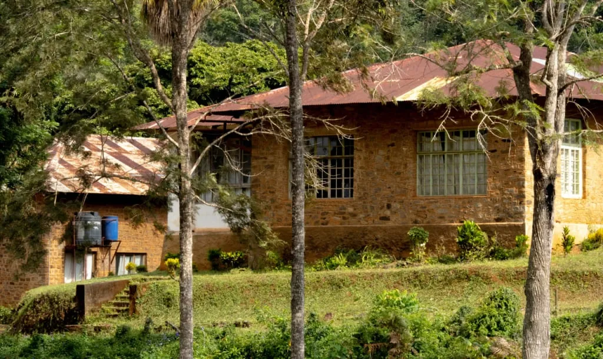
In Amani, three rivers flow: the Sigi, Dodwe, and Kwamkuyu, so there are three waterfalls in the reserve: Zigi, Chemka, and Ndola. They are beautiful in their own right, and if you wish, you can take a dip in them, which is pleasant on a hot day.
The maximum temperature here is around 25°C (77°F). The hottest months are considered to be January and February. From July to September, it's the coolest, with temperatures not exceeding 16°C (60.8°F). Meanwhile, precipitation is fairly evenly distributed throughout the year, with Amani receiving an average of up to 100mm of rainfall or more monthly.
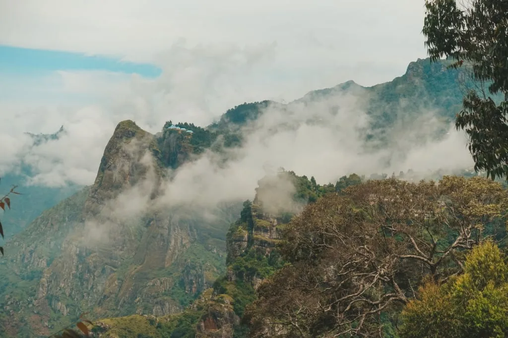
The primary altitude where you will be spending most of your time is around 900 meters (2,950 feet) above sea level, where the plateau is located. Overall, the altitude variations in Amani range from 300 to 1,128 meters (984 to 3,704 feet) above sea level.
By the way, the sea, or more precisely, the Indian Ocean, is very close - only 40 kilometers (24.8 miles) away is the coastal town of Tanga, which also has interesting historical buildings, for example, the Kaiserhof hotel building, which for a while was the first and only hotel in all of East Africa.
If you wish to visit Amani or other forest reserves of the Usambara Mountains, write to our managers, and we would be happy to advise you and design a visit itinerary to this or other natural attractions of Tanzania. Also, feel free to contact us if you are interested in birding in Tanzania - we can recommend numerous other interesting hotspots and organize an exciting birding tour for you. See you in Tanzania!
All content on Angelino Adventures is created with expert insights and thorough research, in line with our Editorial Policy.


Want to know more about Tanzania adventures?
Get in touch with our team! We've explored all the top destinations across Tanzania. Our Kilimanjaro-based adventure consultants are ready to share tips and help you plan your unforgettable journey.
 Tanzania Safaris
Tanzania Safaris
 Kilimanjaro and other mountains
Kilimanjaro and other mountains
 About Angelino Adventures
About Angelino Adventures
 About Tanzania
About Tanzania